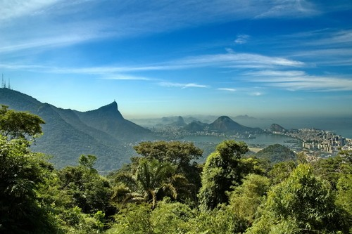

A Natureza Hoje
 Um bioma é um conjunto de tipos de vegetação que abrange grandes áreas contínuas, em escala regional, com flora e fauna similares, definida pelas condições físicas predominantes nas regiões. Esses aspectos climáticos, geográficos e litológicos (das rochas), por exemplo, fazem com que um bioma seja dotado de uma diversidade biológica singular, própria. No Brasil, os biomas existentes são (da maior extensão para a menor): a Amazônia, o cerrado, a Mata Atlântica, a Caatinga, o Pampa e o Pantanal.
Conhecer os biomas e suas características é um fator fundamental para entender todos as demais caracteristicas de cada um desses sistemas. Sua população, agricultura, desenvolvimento e consequentemente a economia são influenciados por esses fatores, indo muito além da mata e clima.
Biomas Brasileiros
Rua Delvito Alves, 888 - Divinéia
CEP 38610-000 - Unaí/MG
Tel. (38) 3676-0000
natureza@natureza.com